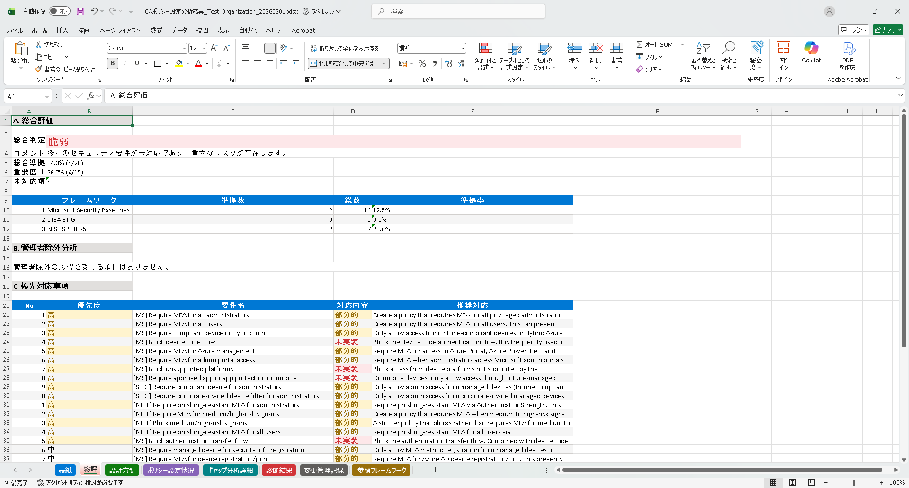
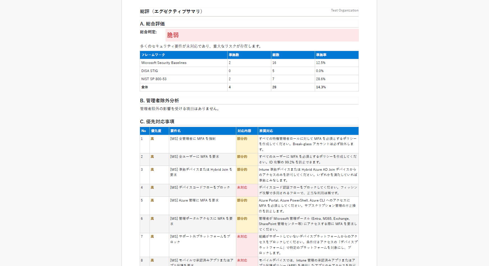
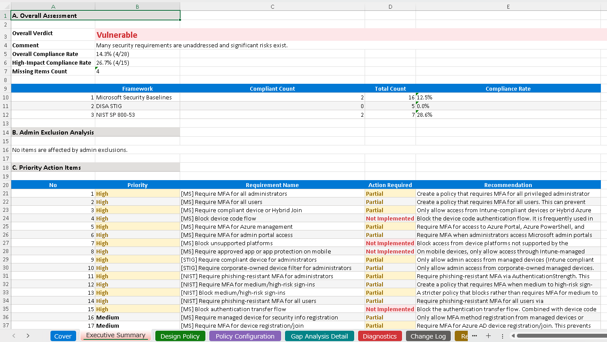
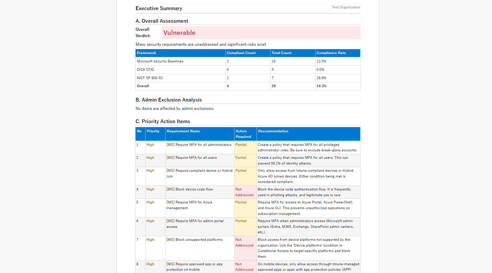

CA Policy Analyzer ユーザーマニュアル
登録済みのポリシーと分析結果を、監査提出用のドキュメントとしてエクスポートする機能です。
Excel（8 シート構成）と PDF（A4）の 2 形式に対応しています。セキュリティ監査や経営報告など、さまざまな場面で活用できる包括的な設計ドキュメントを自動生成します。
エクスポートを実行するには、以下の準備が必要です:

Excel エクスポートは以下の 8 シートで構成されています:
| シート番号 | シート名 | 内容 |
|---|---|---|
| 1 | 表紙 | 組織名、バージョン、作成者、日付 |
| 2 | 総合評価 | エグゼクティブサマリー、準拠率、総合判定 |
| 3 | 設計方針 | セキュリティ戦略、前提条件、スコープ |
| 4 | ポリシー設計 | 全ポリシーの設定一覧表 |
| 5 | セキュリティ準拠・ギャップ分析 | フレームワーク別の準拠マトリクス、ギャップ詳細 |
| 6 | 診断結果 | ポリシー競合、ロックアウトリスク、レガシー認証警告 |
| 7 | 変更管理記録 | 全変更の監査ログ |
| 8 | 参照フレームワーク | NIST / Microsoft / STIG への参照リンク |
Excel ファイルは書式付きテーブル、交互行の色分け、重要度別の色分けが含まれます。ポリシー設計シートは横向き印刷に最適化されています。

Excel と同じ 8 セクション構成で A4 サイズの PDF を生成します。
印刷・共有に最適化されたレイアウトです。表やステータスの色分けはそのまま反映されます。経営層への報告や外部監査人への提出など、フォーマルな用途に適しています。
左サイドバーの「分析設定」を展開すると、「エクスポートメタデータ」セクションがあります。ここで以下を設定できます:
組織名と作成者は必須です。未入力の場合、エクスポートを開始できません。
CA Policy Analyzer User Manual
This feature exports your registered policies and analysis results as audit-ready documentation.
Two formats are supported: Excel (8-sheet workbook) and PDF (A4). It automatically generates comprehensive design documents that can be used for security audits, executive reporting, and various other purposes.
The following preparations are required before exporting:

The Excel export consists of the following 8 sheets:
| Sheet # | Sheet Name | Contents |
|---|---|---|
| 1 | Cover Page | Organization name, version, author, date |
| 2 | Overall Assessment | Executive summary, compliance rate, overall verdict |
| 3 | Design Principles | Security strategy, assumptions, scope |
| 4 | Policy Design | Configuration table for all policies |
| 5 | Security Compliance & Gap Analysis | Framework-specific compliance matrix, gap details |
| 6 | Diagnostic Results | Policy conflicts, lockout risks, legacy authentication warnings |
| 7 | Change Management Record | Audit log of all changes |
| 8 | Reference Frameworks | Reference links to NIST / Microsoft / STIG |
The Excel file includes formatted tables, alternating row colors, and severity-based color coding. The Policy Design sheet is optimized for landscape printing.

Generates an A4-sized PDF with the same 8-section structure as the Excel export.
The layout is optimized for printing and sharing. Table formatting and status color coding are preserved. It is ideal for formal purposes such as executive reporting and submission to external auditors.
Expand "Analysis Settings" in the left sidebar to find the "Export Metadata" section. Here you can configure:
Organization Name and Author are required fields. Export cannot begin if these are left empty.